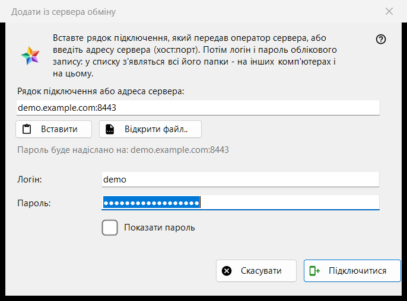
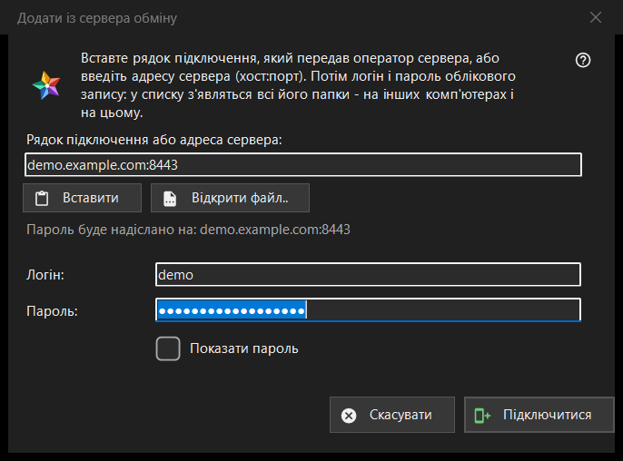

Додати із сервера обміну
Призначення
Підключає цей комп'ютер до облікового запису на сервері обміну, щоб у списку ресурсів з'явилися теки всіх пристроїв цього облікового запису. Вікно відкривається кнопкою «Додати із сервера обміну..» у розділі «Мої пристрої» списку ресурсів, а також коли ви перетягуєте на переглядач рядок підключення чи файл або набираєте рядок у полі теки.


Порядок дій
- Вставте рядок підключення, який передав оператор сервера, введіть адресу у вигляді хост:порт або натисніть «Відкрити файл..».
- Перевірте рядок «Пароль буде надіслано на: ..»: лише на цю адресу піде пароль.
- Введіть логін і пароль.
- Натисніть «Підключитися».
- Якщо програма спитає про сертифікат сервера, звірте відбиток із тим, який назвав оператор.
Елементи вікна
Рядок підключення або адреса
Верхнє поле приймає рядок підключення (він починається з FMSEXCH1:) або адресу виду хост:порт. «Вставити» заповнює його з буфера обміну - з тексту або з картинки з QR-кодом, а «Відкрити файл..» читає файл .fmsexch або картинку з QR-кодом. Вставка лише заповнює форму: нічого не надсилається, доки ви не натиснете «Підключитися». Рядок під полем показує, куди піде пароль; веб-адреса, код спільної папки чи пошкоджений рядок відхиляються там зрозумілими словами.
Логін і пароль
«Логін:» заповнюється з рядка, якщо він у ньому є. «Пароль:» схований, «Показати пароль» його показує. Під час натискання «Підключитися» поля пароля очищаються раніше, ніж з комп'ютера піде перший байт. Рядок стану показує перебіг підключення й у разі невдачі причину: логін чи пароль не підійшли, забагато спроб, сервер не відповідає.
Рядок-запрошення
Рядок-запрошення вже називає сервер і перемикає вікно на створення облікового запису: з'являються «Пароль ще раз:» і пояснення про правило для пароля (не коротше за 10 символів, з великою та малою латинськими літерами й цифрою), а кнопка називається «Створити обліковий запис». Останнє слово за правилом лишається за сервером.
Сертифікат сервера
Якщо сертифікат невідомий, питання показує його відбиток і питає, чи довіряти серверу та чи запам'ятати його; відповідь за замовчуванням «Ні». Якщо рядок називає один відбиток, а сервер пред'являє інший, показуються обидва, нічого не запам'ятовується і пароль не надсилається.
Повторний вхід
Коли вікно відкрито для наявного запису сервера, щоб увійти заново, адреса й логін показуються лише для читання, а опорою довіри править відбиток, який цей запис уже пам'ятає.